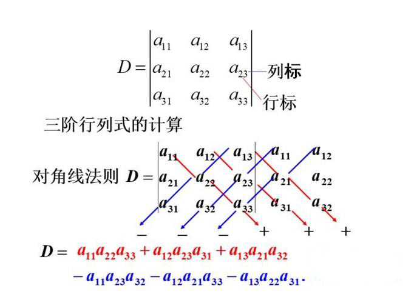

第三节 行列式
数域 K 上已知一个二元一次方程组：
其系数矩阵
表示方法（二阶行列式）：
在数域 K 上方程组有唯一解的充分必要条件是
从二阶行列式来看，计算结果就是一个对角线的积减去另一个对角线（反对角线）的积。
定义：是 2!项代数和，其中每一项是取自不同行、不同列的两个元素的乘积，每一项的行指标成自然序（从小到大）排好位置。当列指标按自然序排列时，该项带正号。反之，该项带负号。
n 元排列
1,2,…..,n 的一个全排列称为一个n 元排列。（或 n 个不同的正整数）
1,2,….,n 形成的 n 元排列有 n!个。（或 n 个不同的正整数）
例如三元排列有 123,132,213,231,312,321 共 6 个。
四元排列 2431 从左到右 顺序（从小到大）的数对有：23,24
逆序的数对有：21,43,41,31
逆序的数对的数目称为这个排列的逆序数。所以 2431 的逆序数是 4，记作
逆序数是偶（奇）数的排列称为偶（奇）排列。
排列 2134 的逆序数为 1 是奇数，所以 2134 是一个奇排列。
定理 1：对换改变排列的奇偶性。
证明：先看对换的两个数相邻的情形：
排列对换后，i,j 二者顺序交换，顺序变为逆序，逆序变为顺序，其他数不变。
排列（1）与（2）逆序数相差 1，从而排列（1）与排列（2）奇偶性相反。
一般情形：
由两个数相邻的情形，可多次进行相邻对换来达到以上对换的效果。
排列（2）到排列（4）经过(s+1)+s=2s+1 次相邻两数的对换。每变换一次改变一次奇偶性，经过奇数次，最终奇偶性相反。
例如：
定理 2：所以任意一个 n 元排列
证明：
设原排列是奇排列则 s 必为奇数，原排列是偶排列则 s 必为偶数。
n 阶行列式的定义
定义 1：n 阶行列式是 n!项的代数和，其中每一项是不同行不同列的 n 个元素乘积，每一项按行指标成自然序排好位置，当列指标形成的排列是偶排列时，带正号，反之就带负号。
n 阶行列式（1）也称为 n 级矩阵 A 的行列式记作：|A|或 det A
(1)式称为 n 阶行列式的完全展开式。
矩阵 A 可以简记为$A=(a{ij})
一阶行列式
三阶行列式
偶排列：123 312 231
奇排列：132 321 213
计算图解如下，可以记这个图

n 阶行列式
主对角线下方元素全为零，这样的行列式称为上三角形行列式。
命题 1：上三角形行列式的值等于主对角线上 n 个元素的乘积。
按行指标排列的 n 阶行列式的一项：$(-1)^{\tau(j1j_2 \cdots j_n)}a{1j1}a{2j2}\cdots a{njn}
其他项同理:
理由如下：
首先
根据定理 2 和定理 1：
从而
因此推论成立。
根据以上分析，给定行指标的一个排列
或给定列指标的一个排列
所以 n 阶行列式也可以按列指标的排成自然序，此时用行指标所成排列的奇偶性来决定该项的正负号。